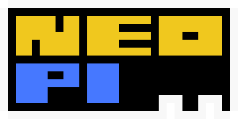
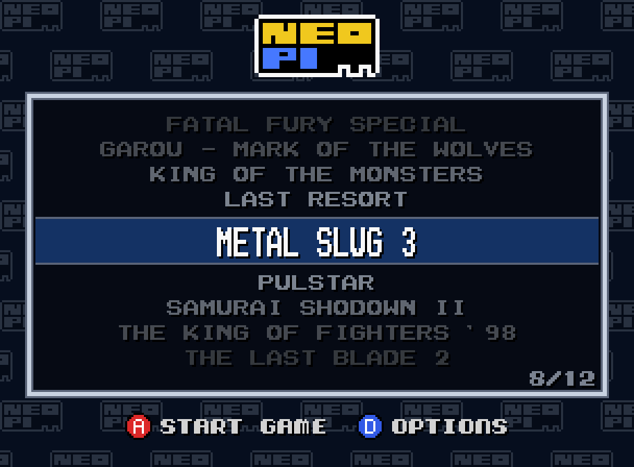
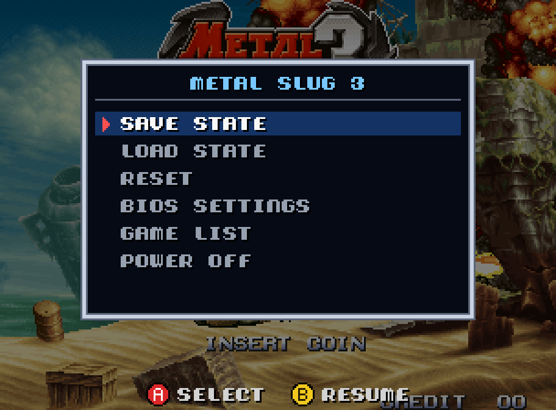
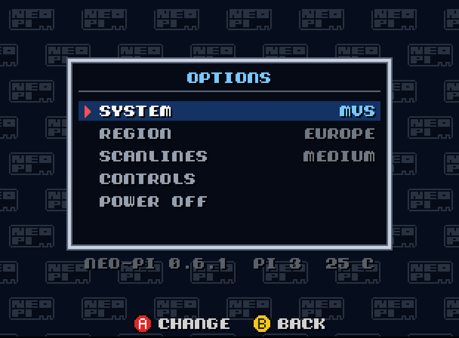

No operating system. No setup hassle. Just power on and insert coin.
For RPi 4 · Free · GPLv3
Enjoying it? Buy me a crema caffè


Powered by Geolith, a highly accurate Neo Geo emulator. Play in MVS arcade mode or AES home-console mode, with support for all BIOS regions.
USB gamepads are polled every millisecond for responsive input, with no operating system adding another layer between you and the game.
Crisp, square pixels at 1080p or 720p, with optional scanlines, lag-free.
Streamlined, bare metal: from power on to the game in a few seconds.
Save states, BIOS settings, screenshots, lazy finger (turbo). All driven from the gamepad.
Just one game on the card? neo-pi boots straight into it!
neogeo.zip BIOS file and your .neo game files into the neopi folder.BIOS files and games are not included with neo-pi.
The first time you connect a pad, neo-pi asks you to press the buttons you want as A, B, C, D, Start and Select. Then, in game:
In the game list: A or Start to play, D for the options. The second pad is player 2.
neo-pi is free. If you enjoy it, you can buy me a crema caffè :)
Coming next: composite output for CRT TVs, UniBIOS support, Raspberry Pi 3 optimizations.
Buy me a coffee